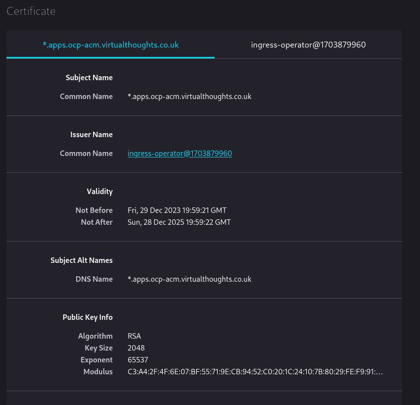
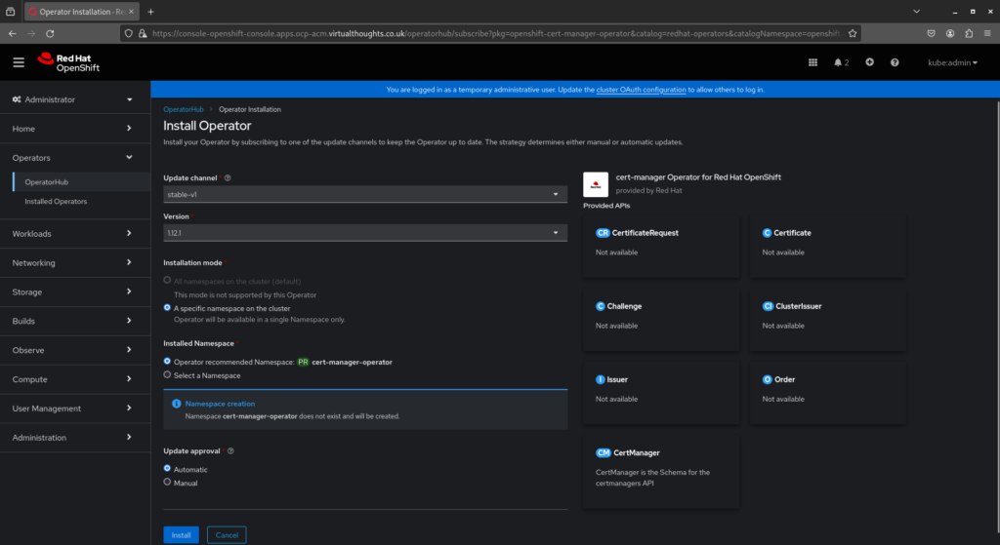
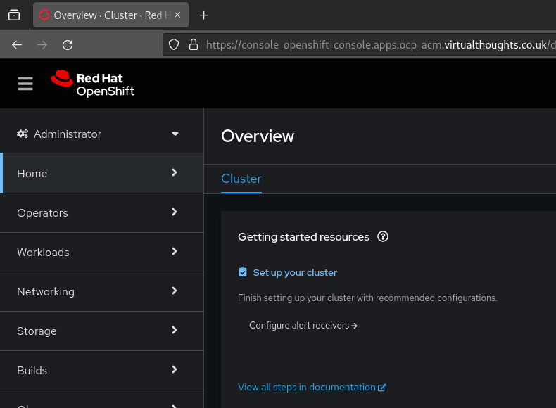
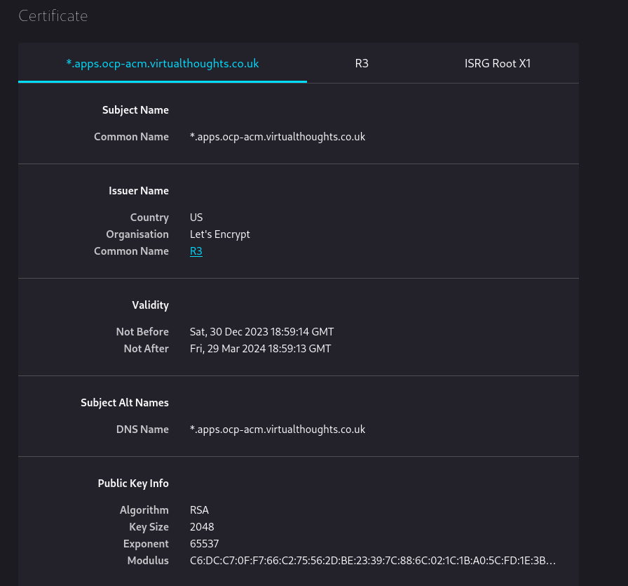

Changing the default apps wildcard certificate in OCP4
In a standard OCP4 installation, several route objects are created by default and secured with a internally signed wildcard certificate.
These routes are configured as <app-name>.apps.<domain>. In my example, I have a cluster with the assigned domain ocp-acm.virtualthoughts.co.uk, which results in the routes below:
oauth-openshift.apps.ocp-acm.virtualthoughts.co.uk
console-openshift-console.apps.ocp-acm.virtualthoughts.co.uk
grafana-openshift-monitoring.apps.ocp-acm.virtualthoughts.co.uk
thanos-querier-openshift-monitoring.apps.ocp-acm.virtualthoughts.co.uk
prometheus-k8s-openshift-monitoring.apps.ocp-acm.virtualthoughts.co.uk
alertmanager-main-openshift-monitoring.apps.ocp-acm.virtualthoughts.co.uk
Inspecting console-openshift-console.apps.ocp-acm.virtualthoughts.co.uk shows us the default wildcard TLS certificate used by the Ingress Operator:

Because it’s internally signed, it’s not trusted by default by external clients. However, this can be changed.
Installing Cert-Manager
OperatorHub includes the upstream cert-manager chart, as well as one maintained by Red Hat. This can be installed to manage the lifecycle of our new certificate. Navigate to Operators -> Operator Hub -> cert-manager and install.

Create Secret, Issuer and Certificate resources
With Cert-Manager installed, we need to provide configuration so it knows how to issue challenges and generate certificates. In this example:
Secret- A client secret created from my cloud provider for authentication used to satisfy thechallengetype. In this example AzureDNS, as I’m using the DNS challenge request type to prove ownership of this domain.ClusterIssuer- A cluster wide configuration that when referenced, determines how to get (issue) certs. You can have multiple Issuers in a cluster, namespace or cluster scoped pointing to different providers and configurations.Certificate- TLS certs can be generated automatically from ingress annotations, however in this example, it is used to request and store the certificate in its own lifecycle, not tied to a specificingressobject.
Let’s Encrypt provides wildcard certificates, but only through the DNS-01 challenge. The HTTP-01 challenge cannot be used to issue wildcard certificates. This is reflected in the config:
apiVersion: v1
kind: Secret
metadata:
name: azuredns-config
namespace: cert-manager
type: Opaque
data:
client-secret: <Base64 Encoded Secret from Azure>
---
apiVersion: cert-manager.io/v1
kind: ClusterIssuer
metadata:
name: letsencrypt-production
namespace: cert-manager
spec:
acme:
server: https://acme-v02.api.letsencrypt.org/directory
email: <email>
privateKeySecretRef:
name: letsencrypt
solvers:
- dns01:
azureDNS:
clientID: <clientID>
clientSecretSecretRef:
name: azuredns-config
key: client-secret
subscriptionID: <subscriptionID>
tenantID: <tenantID>
resourceGroupName: <resourceGroupName>
hostedZoneName: virtualthoughts.co.uk
# Azure Cloud Environment, default to AzurePublicCloud
environment: AzurePublicCloud
---
apiVersion: cert-manager.io/v1
kind: Certificate
metadata:
name: wildcard-apps-certificate
namespace: openshift-ingress
spec:
secretName: apps-wildcard-tls
issuerRef:
name: letsencrypt-production
kind: ClusterIssuer
commonName: "*.apps.ocp-acm.virtualthoughts.co.uk"
dnsNames:
- "*.apps.ocp-acm.virtualthoughts.co.uk"
Applying the above will create the respective objects required for us to request, receive and store a wildcard certificate from LetsEncrypt, using the DNS challenge request with AzureDNS.
The certificate may take ~2mins or so to become Ready due to the nature of the DNS style challenge.
oc get cert -A
NAMESPACE NAME READY SECRET AGE
openshift-ingress wildcard-apps-certificate True apps-wildcard-tls 33m
Patch the Ingress Operator
With the certificate object created, the Ingress Operator needs re configuring, referencing the secret name of the certificate object for our new certificate:
oc patch ingresscontroller.operator default \
--type=merge -p \
'{"spec":{"defaultCertificate":{"name":"apps-wildcard-tls"}}}' \
--namespace=openshift-ingress-operator
Validate
After applying, navigating back to the clusters console will present the new wildcard cert:

